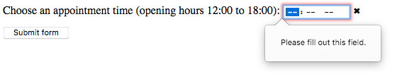
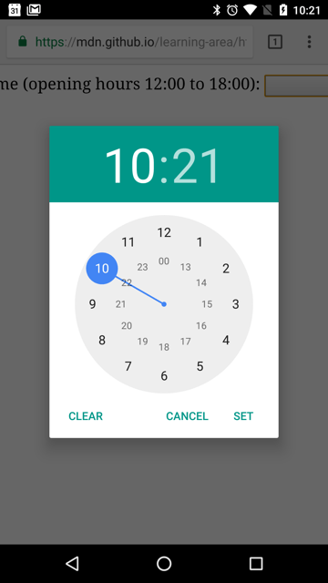

12-hour
12-hour{{htmlelement("input")}} elements of type time create input fields designed to let the user easily enter a time (hours and minutes, and optionally seconds).
The control's user interface varies from browser to browser; see {{anch("Browser compatibility")}} for further details. In unsupported browsers, the control degrades gracefully to <input type="text">.
In Chrome/Opera the time control is simple, with slots to enter hours and minutes in 12 or 24-hour format depending on operating system locale, and up and down arrows to increment and decrement the currently selected component. In some versions, an "X" button is provided to clear the control's value.
12-hour
 24-hour
24-hour
Firefox's time control is very similar to Chrome's, except that it doesn't have the up and down arrows. It also uses a 12- or 24-hour format for inputting times, based on system locale. An "X" button is provided to clear the control's value.
 12-hour
12-hour
 24-hour
24-hour
The Edge time control is somewhat more elaborate, opening up an hour and minute picker with sliding reels. It, like Chrome, uses a 12- or 24-hour format for inputting times, based on system locale:
 12-hour
12-hour
 24-hour
24-hour
| {{anch("Value")}} | A {{domxref("DOMString")}} representing a time, or empty. |
| Events | {{domxref("HTMLElement/change_event", "change")}} and {{domxref("HTMLElement/input_event", "input")}} |
| Supported common attributes | {{htmlattrxref("autocomplete", "input")}}, {{htmlattrxref("list", "input")}}, {{htmlattrxref("readonly", "input")}}, and {{htmlattrxref("step", "input")}} |
| IDL attributes | value, valueAsDate, valueAsNumber, and list. |
| Methods | {{domxref("HTMLInputElement.select", "select()")}}, {{domxref("HTMLInputElement.stepDown", "stepDown()")}}, and {{domxref("HTMLInputElement.stepUp", "stepUp()")}}. |
A {{domxref("DOMString")}} containing the value of the time entered into the input. You can set a default value for the input by including a valid time in the {{htmlattrxref("value", "input")}} attribute when creating the <input> element, like so:
<label for="appt-time">Choose an appointment time: </label> <input id="appt-time" type="time" name="appt-time" value="13:30">
{{ EmbedLiveSample('value-sample1', 600, 60) }}
You can also get and set the date value in JavaScript using the {{domxref("HTMLInputElement")}} value property, for example:
var timeControl = document.querySelector('input[type="time"]');
timeControl.value = '15:30';
The value of the time input is always in 24-hour format that includes leading zeros: hh:mm, regardless of the input format, which is likely to be selected based on the user's locale (or by the user agent). If the time includes seconds (see {{anch("Using the step attribute")}}), the format is always hh:mm:ss. You can learn more about the format of the time value used by this input type in {{SectionOnPage("/en-US/docs/Web/HTML/Date_and_time_formats", "Time strings")}}.
In this example, you can see the time input's value by entering a time and seeing how it changes afterward.
First, a look at the HTML. This is simple enough, with the label and input as we've seen before, but with the addition of a {{HTMLElement("p")}} element with a {{HTMLElement("span")}} to display the value of the time input:
<form>
<label for="startTime">Start time: </label>
<input type="time" id="startTime">
<p>
Value of the <code>time</code> input: <code>
"<span id="value">n/a</span>"</code>.
</p>
</form>
The JavaScript code adds code to the time input to watch for the {{domxref("HTMLElement/input_event", "input")}} event, which is triggered every time the contents of an input element change. When this happens, the contents of the <span> are replaced with the new value of the input element.
var startTime = document.getElementById("startTime");
var valueSpan = document.getElementById("value");
startTime.addEventListener("input", function() {
valueSpan.innerText = startTime.value;
}, false);
{{EmbedLiveSample("Time_value_format", 600, 80)}}
When a form including a time input is submitted, the value is encoded before being included in the form's data. The form's data entry for a time input will always be in the form name=hh%3Amm, or name=hh%3Amm%3Ass if seconds are included (see {{anch("Using the step attribute")}}).
In addition to the attributes common to all {{HTMLElement("input")}} elements, time inputs offer the following attributes:
| Attribute | Description |
|---|---|
{{anch("list")}} |
The id of the <datalist> element that contains the optional pre-defined autocomplete options |
{{anch("max")}} |
The latest time to accept, in the syntax described under {{anch("Time value format")}} |
{{anch("min")}} |
The earliest time to accept as a valid input |
{{anch("readonly")}} |
A Boolean attribute which, if present, indicates that the contents of the time input should not be user-editable |
{{anch("step")}} |
The stepping interval to use both for user interfaces purposes and during constraint validation |
Unlike many data types, time values have a periodic domain, meaning that the values reach the highest possible value, then wrap back around to the beginning again. For example, specifying a min of 14:00 and a max of 2:00 means that the permitted time values start at 2:00 PM, run through midnight to the next day, ending at 2:00 AM. See more in the making min and max cross midnight section of this article.
{{page("/en-US/docs/Web/HTML/Element/input/text", "attr-list", 0, 1, 2)}}
maxA string indicating the latest time to accept, specified in the same {{anch("Time value format", "time value format")}} as described above. If the specified string isn't a valid time, no maximum value is set.
minA string specifying the earliest time to accept, given in the {{anch("Time value format", "time value format")}} described previously. If the value specified isn't a valid time string, no minimum value is set.
{{page("/en-US/docs/Web/HTML/Element/input/text", "attr-readonly", 0, 1, 2)}}
step{{page("/en-US/docs/Web/HTML/Element/input/number", "step-include")}}
For time inputs, the value of step is given in seconds, with a scaling factor of 1000 (since the underlying numeric value is in milliseconds). The default value of step is 60, indicating 60 seconds (or 1 minute, or 60,000 milliseconds).
At this time, it's unclear what a value of any means for step when used with time inputs. This will be updated as soon as that information is determined.
The simplest use of <input type="time"> involves a basic <input> and {{htmlelement("label")}} element combination, as seen below:
<form> <label for="appt-time">Choose an appointment time: </label> <input id="appt-time" type="time" name="appt-time"> </form>
{{EmbedLiveSample('Basic_uses_of_time', 600, 40)}}
<input type="time"> doesn't support form sizing attributes such as {{htmlattrxref("size", "input")}}, since times are always about the same number of characters long. You'll have to resort to CSS for sizing needs.
You can use the {{htmlattrxref("step", "input")}} attribute to vary the amount of time jumped whenever the time is incremented or decremented (for example, so the time moves by 10 minutes at a time when clicking the little arrow widgets).
This property has some strange effects across browsers, so is not completely reliable.
It takes an integer value that equates to the number of seconds you want to increment by; the default value is 60 seconds, or one minute. If you specify a value of less than 60 seconds (1 minute), the time input will show a seconds input area alongside the hours and minutes:
<form> <label for="appt-time">Choose an appointment time: </label> <input id="appt-time" type="time" name="appt-time" step="2"> </form>
{{EmbedLiveSample('Using_the_step_attribute', 600, 40)}}
In Chrome and Opera, which are the only browsers to show up/down iteration arrows, clicking the arrows changes the seconds value by two seconds, but doesn't affect the hours or minutes. Minutes (or hours) can only be used for stepping when you specify a number of minutes (or hours) in seconds, such as 120 for 2 minutes, or 7200 for 2 hours).
In Firefox, there are no arrows, so the step value isn't used. However, providing it does add the seconds input area adjacent to the minutes section.
The steps value seems to have no effect in Edge.
Using step seems to cause validation to not work properly (as seen in the next section).
By default, <input type="time"> does not apply any validation to entered values, other than the user agent's interface generally not allowing you to enter anything other than a time value. This is helpful (assuming the time input is fully supported by the user agent), but you can't entirely rely on the value to be a proper time string, since it might be an empty string (""), which is allowed. It's also possible for the value to look roughly like a valid time but not be correct, such as 25:05.
You can use the {{htmlattrxref("min", "input")}} and {{htmlattrxref("max", "input")}} attributes to restrict the valid times that can be chosen by the user. In the following example we are setting a minimum time of 12:00 and a maximum time of 18:00:
<form>
<label for="appt-time">Choose an appointment time (opening hours 12:00 to 18:00): </label>
<input id="appt-time" type="time" name="appt-time"
min="12:00" max="18:00">
<span class="validity"></span>
</form>
{{ EmbedLiveSample('Setting_maximum_and_minimum_times', 600, 40) }}
Here's the CSS used in the above example. Here we make use of the {{cssxref(":valid")}} and {{cssxref(":invalid")}} CSS properties to style the input based on whether or not the current value is valid. We had to put the icons on a {{htmlelement("span")}} next to the input, not on the input itself, because in Chrome the generated content is placed inside the form control, and can't be styled or shown effectively.
div {
margin-bottom: 10px;
position: relative;
}
input[type="number"] {
width: 100px;
}
input + span {
padding-right: 30px;
}
input:invalid+span:after {
position: absolute;
content: '✖';
padding-left: 5px;
}
input:valid+span:after {
position: absolute;
content: '✓';
padding-left: 5px;
}
The result here is that:
By setting a {{htmlattrxref("min", "input")}} attribute greater than the {{htmlattrxref("max", "input")}} attribute, the valid time range will wrap around midnight to produce a valid time range which crosses midnight. This functionality is not supported by any other input types. While this feature is in the HTML spec, it is not yet universally supported. Chrome-based browsers support it starting in version 82 and Firefox added it in version 76. Safari as of version 14.1 does not support this. Be prepared for this situation to arise:
const input = document.createElement('input');
input.type = 'time';
input.min = '23:00';
input.max = '01:00';
input.value = '23:59';
if (input.validity.valid && input.type === 'time') {
// <input type=time> reversed range supported
} else {
// <input type=time> reversed range unsupported
}
In addition, you can use the {{htmlattrxref("required", "input")}} attribute to make filling in the time mandatory. As a result, supporting browsers will display an error if you try to submit a time that is outside the set bounds, or an empty time field.
Let's look at an example; here we've set minimum and maximum times, and also made the field required:
<form>
<div>
<label for="appt-time">Choose an appointment time (opening hours 12:00 to 18:00): </label>
<input id="appt-time" type="time" name="appt-time"
min="12:00" max="18:00" required>
<span class="validity"></span>
</div>
<div>
<input type="submit" value="Submit form">
</div>
</form>
If you try to submit the form with an incomplete time (or with a time outside the set bounds), the browser displays an error. Try playing with the example now:
{{ EmbedLiveSample('Making_times_required', 600, 120) }}
Here's a screenshot for those of you who aren't using a browser that supports time inputs:

Important: HTML form validation is not a substitute for scripts that ensure that the entered data is in the proper format. It's far too easy for someone to make adjustments to the HTML that allow them to bypass the validation, or to remove it entirely. It's also possible for someone to bypass your HTML entirely and submit the data directly to your server. If your server-side code fails to validate the data it receives, disaster could strike when improperly-formatted data is submitted (or data which is too large, of the wrong type, and so forth).
As mentioned, older versions of Safari and a few other, less common, browsers don't support time inputs natively. In general, otherwise, support is good — especially on mobile platforms, which tend to have very nice user interfaces for specifying a time value. For example, the time picker on Chrome for Android looks like this:

Browsers that don't support time inputs gracefully degrade to a text input, but this creates problems both in terms of consistency of user interface (the presented control will be different), and data handling.
The second problem is the more serious; as mentioned previously, time inputs' values are always normalized to the format hh:mm or hh:mm:ss. With a text input, on the other hand, by default the browser has no idea of what format the time should be in, and there are multiple ways in which people write times, such as:
3.00 pm3:00pm15:003 o'clock in the afternoonOne way around this is to put a {{htmlattrxref("pattern", "input")}} attribute on your time input. Even though the time input doesn't use it, the text input fallback will. For example, try viewing the following demo in a browser that doesn't support time inputs:
<form>
<div>
<label for="appt-time">Choose an appointment time (opening hours 12:00 to 18:00): </label>
<input id="appt-time" type="time" name="appt-time"
min="12:00" max="18:00" required
pattern="[0-9]{2}:[0-9]{2}">
<span class="validity"></span>
</div>
<div>
<input type="submit" value="Submit form">
</div>
</form>
{{ EmbedLiveSample('Handling_browser_support', 600, 100) }}
If you try submitting it, you'll see that non-supporting browsers now display an error message (and highlight the input as invalid) if your entry doesn't match the pattern nn:nn, where n is a number from 0 to 9. Of course, this doesn't stop people from entering invalid times, or incorrectly formatted times that follow the pattern.
Then there's the problem of the user having no idea exactly what format the time is expected to be in.
div {
margin-bottom: 10px;
position: relative;
}
input[type="number"] {
width: 100px;
}
input + span {
padding-right: 30px;
}
input:invalid+span:after {
position: absolute;
content: '✖';
padding-left: 5px;
}
input:valid+span:after {
position: absolute;
content: '✓';
padding-left: 5px;
}
The best way to deal with times in forms in a cross-browser way, for the time being, is to get the user to enter the hours and minutes (and seconds if required) in separate controls ({{htmlelement("select")}} elements are popular; see below for an example), or use JavaScript libraries such as the jQuery timepicker plugin.
In this example, we create two sets of interface elements for choosing times: a native picker created with <input type="time">, and a set of two {{htmlelement("select")}} elements for choosing hours/minutes in older browsers that don't support the native input.
{{ EmbedLiveSample('Examples', 600, 140) }}
The HTML looks like so:
<form>
<div class="nativeTimePicker">
<label for="appt-time">Choose an appointment time (opening hours 12:00 to 18:00): </label>
<input id="appt-time" type="time" name="appt-time"
min="12:00" max="18:00" required>
<span class="validity"></span>
</div>
<p class="fallbackLabel">Choose an appointment time (opening hours 12:00 to 18:00):</p>
<div class="fallbackTimePicker">
<div>
<span>
<label for="hour">Hour:</label>
<select id="hour" name="hour">
</select>
</span>
<span>
<label for="minute">Minute:</label>
<select id="minute" name="minute">
</select>
</span>
</div>
</div>
</form>
The hour and minutes values for their <select> elements are dynamically generated.
div {
margin-bottom: 10px;
position: relative;
}
input[type="number"] {
width: 100px;
}
input + span {
padding-right: 30px;
}
input:invalid+span:after {
position: absolute;
content: '✖';
padding-left: 5px;
}
input:valid+span:after {
position: absolute;
content: '✓';
padding-left: 5px;
}
The other part of the code that may be of interest is the feature detection code — to detect whether the browser supports <input type="time">, we create a new {{htmlelement("input")}} element, try setting its type to time, then immediately check what its type is set to — non-supporting browsers will return text, because the time type falls back to type text. If <input type="time"> is not supported, we hide the native picker and show the fallback picker UI ({{htmlelement("select")}}s) instead.
// define variables
var nativePicker = document.querySelector('.nativeTimePicker');
var fallbackPicker = document.querySelector('.fallbackTimePicker');
var fallbackLabel = document.querySelector('.fallbackLabel');
var hourSelect = document.querySelector('#hour');
var minuteSelect = document.querySelector('#minute');
// hide fallback initially
fallbackPicker.style.display = 'none';
fallbackLabel.style.display = 'none';
// test whether a new date input falls back to a text input or not
var test = document.createElement('input');
try {
test.type = 'time';
} catch (e) {
console.log(e.description);
}
// if it does, run the code inside the if() {} block
if(test.type === 'text') {
// hide the native picker and show the fallback
nativePicker.style.display = 'none';
fallbackPicker.style.display = 'block';
fallbackLabel.style.display = 'block';
// populate the hours and minutes dynamically
populateHours();
populateMinutes();
}
function populateHours() {
// populate the hours <select> with the 6 open hours of the day
for(var i = 12; i <= 18; i++) {
var option = document.createElement('option');
option.textContent = i;
hourSelect.appendChild(option);
}
}
function populateMinutes() {
// populate the minutes <select> with the 60 hours of each minute
for(var i = 0; i <= 59; i++) {
var option = document.createElement('option');
option.textContent = (i < 10) ? ("0" + i) : i;
minuteSelect.appendChild(option);
}
}
// make it so that if the hour is 18, the minutes value is set to 00
// — you can't select times past 18:00
function setMinutesToZero() {
if(hourSelect.value === '18') {
minuteSelect.value = '00';
}
}
hourSelect.onchange = setMinutesToZero;
minuteSelect.onchange = setMinutesToZero;
{{Specifications}}
{{Compat}}
<input type="datetime-local">, <input type="date">, <input type="week">, and <input type="month">